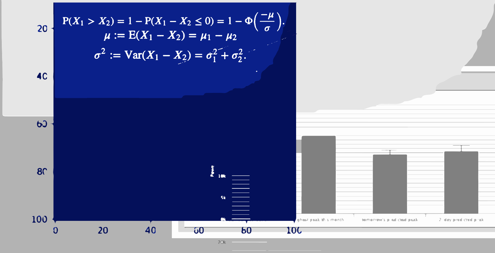
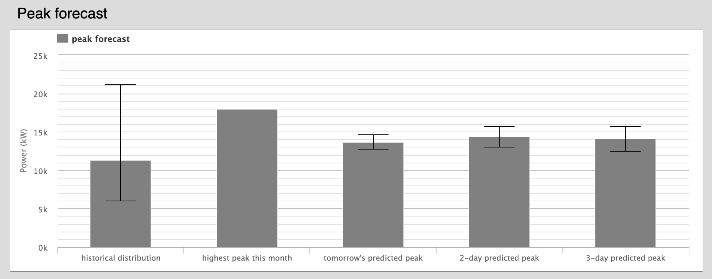
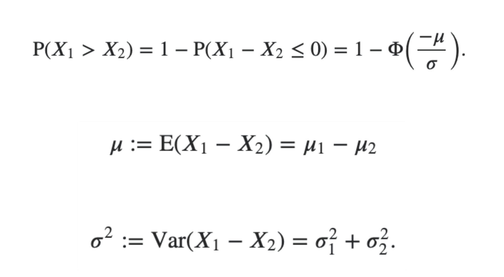
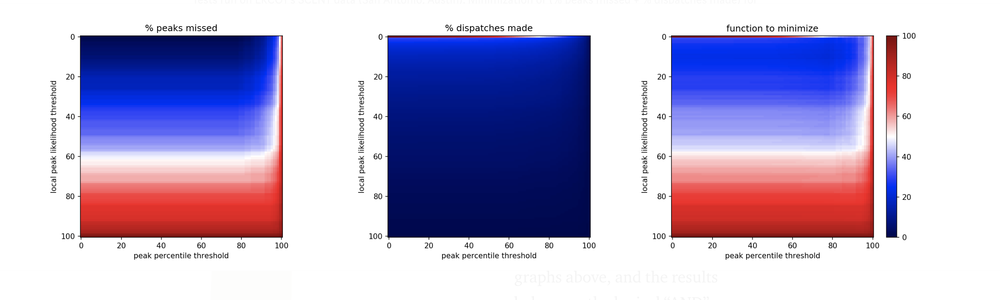
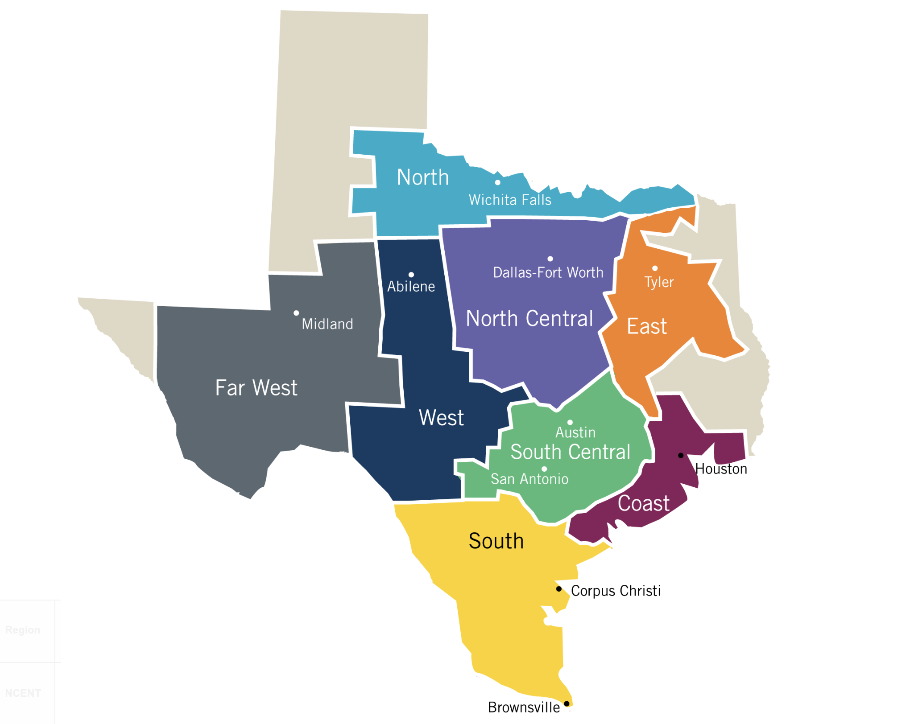
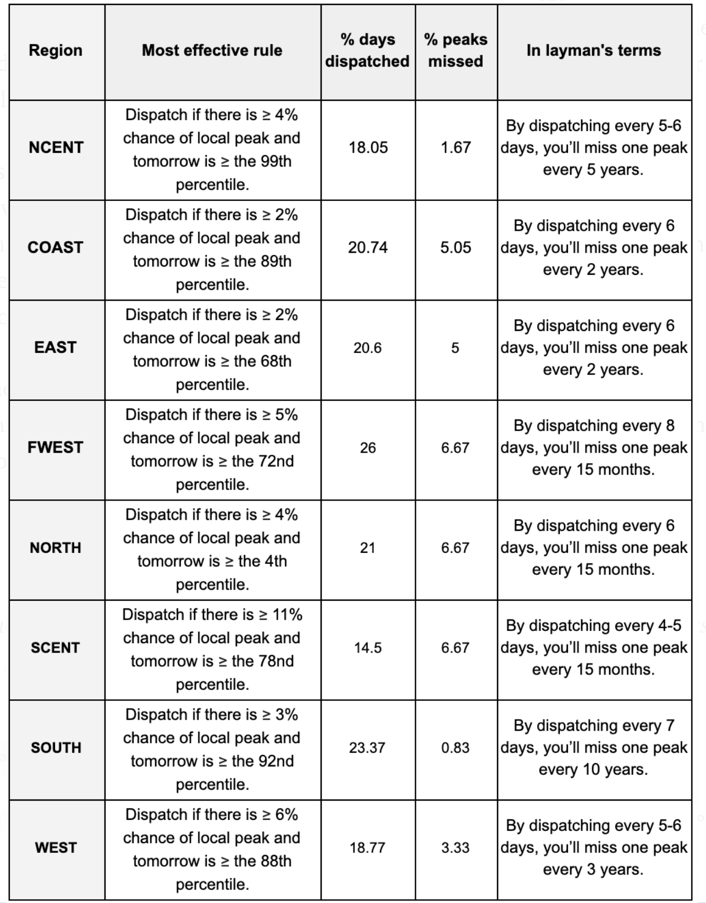

How short-term forecasting with neural nets can inform long-term decisions.
Electric utilities can detect monthly peaks with only a three-day forecast.
September 2, 2019
For electric utilities, reducing monthly demand charge can be hugely profitable. Implementing a peak shaving strategy every day, however, could be costly. If a utility is using direct load control (paying customers to turn off air conditioners, water heaters, etc.), they may frustrate customers if they do so too frequently. If a utility uses storage, overuse can force them to replace expensive batteries more often than necessary. Therefore, it’s not only important to predict the load shape for the next day, but also to predict the month’s peak. In an ideal world, a utility with a monthly demand charge would need to shave peaks one day a month.
Unfortunately, similar to the weather predictions, load predictions get unreliable after a few days. Past three-day forecasts, our predictions level out at 10 mean absolute percent error (MAPE). And since it’s not uncommon for an entire month’s daily peaks to fall within a 10 MAPE band, finding monthly peaks quickly becomes guesswork.
Thankfully, by combining a few statistical techniques, we can place tomorrow’s forecast in context and dramatically reduce the number of days we dispatch.
The Setup
We’re motivated by a single question: is tomorrow this month’s peak?
We know that we can’t have a 30-day forecast, but by looking at three-day predictions, what’s already happened this month, and historical peaks, we can answer two smaller questions:
- Will tomorrow be a local peak?
- Is tomorrow’s load especially high for this month?
In the end, we’ll combine the answers to inform our motivating question.
Will tomorrow be a local peak?
A “local peak” would mean that tomorrow is the highest in a three-day forecast and also higher than any load already seen this month. In the beta version our web application, this is how it is represented:

Above is a forecast for the 20th of December in the north central region of Texas in 2018. Because “tomorrow’s predicted peak” is considerably lower than the highest peak seen so far, a utility would not implement a peak shaving strategy on December 20th.
Considering that the model’s prediction is likely accurate around a normal distribution, we can assign a number to the statistical likelihood that tomorrow will be a local peak. It’s given by this formula:

Given two normal distributions (subscripts 1 and 2, defined by their mean and standard deviation), what is the likelihood that the sample X₁ will be greater than the sample X₂.
If you’re interested in the details, here’s a link to a full explanation. And below is how we expand that formula and translate it into python:
from scipy.stats import norm
def peak_likelihood(hist=None,
tomorrow=None, tomorrow_std=None,
two_day=None, two_day_std=None,
three_day=None, three_day_std=None):
'''
Given the predictions and standard deviation of the three-day forecast, in
addition to the highest load so far this month, what is the likelihood that
a sample from tomorrow's distribution will be higher than the other three.
'''
# likelihood that tomorrow is lower than highest so far this month
A = norm(tomorrow, tomorrow_std).cdf(hist)
# likelihood that tomorrow is lower than than the two-day forecast
B = norm(0, 1).cdf(-(tomorrow - two_day) / ((tomorrow_std**2 + two_day_std**2)**.5))
# likelihood that tomorrow is lower than than the three-day forecast
C = norm(0, 1).cdf(-(tomorrow - three_day) / ((tomorrow_std**2 + three_day_std**2)**.5))
# likelihood tomorrow is (not A) AND (not B) AND (not C)
# in other words, what's the likelihood that tomorrow is local peak
return round((1 - A)*(1 - B)*(1 - C)*100, 2)
Using the example from December 20th and rounding to two decimals, the “local peak likelihood” for tomorrow is 0.0%, mostly because the area under the normal distribution for tomorrow’s peak is very small above the highest peak so far.
Is tomorrow’s load especially high for this month?
This question is simpler to answer. We look at the monthly data from previous years, and calculate the percentile of tomorrow’s prediction. It’s important to note that we’re calculating percentile with daily peaks, not hourly load.
What are we trying to minimize?
We have two factors, “local peak likelihood” and “peak percentile”, and we want to make a rule that will minimize two results, “percent of peaks missed” and “percent of dispatches made.”
These two results are tradeoffs that each utility must make. If they want to ensure that every peak is captured (low percent of peaks missed), they must dispatch every day (high percent of dispatches made). And vice versa: if they want to be conservative with the number of dispatches, they run the risk of missing a peak.
We need a single target to minimize. So for our purposes, we’ll simply add the two objectives. In the heat maps below, the function to minimize (right), is simply the sum of the other two. Naturally, considering a utility’s priorities, they would weigh this optimization function differently. Since there’s also a monetary aspect to this, a proper cost-benefit analysis would be necessary. But those calculations are unique to each utility.
The Results
I ran tests on ERCOT data from the various regions of Texas from 2002 to 2018. I ran the program from 2008 to 2018 so that the “peak percentile” variable had some hindsight. The entire testing process can be found in this jupyter notebook.
I assumed that we had 97% accuracy for one-day forecasts, 95% accuracy for two-day forecasts, and 92% accuracy for three-day forecasts — results that are found commonly in academic literature and also reflected in our own testing.

Tests run on ERCOT’s SCENT data (San Antonio, Austin). Minimization of (% peaks missed + % dispatches made) for the two variables (“peak percentile threshold” and “local peak likelihood threshold”)
Above is one example from the south central region of Texas. Note that there is a sharp line across the top of the center heat map. More than half of all daily peaks have a 0 percent chance of being a local peak, suggesting that regardless of the optimization method put in place by utilities, this method will immediately cut dispatches in half while rarely missing a peak. This band was revealed in all regions of Texas where this test was performed.

It’s important to note that the graphs above, and the results below use the logical “AND” when creating the dispatch rule (e.g. Dispatch if there is ≥ 4% chance of local peak AND tomorrow is ≥ the 99th percentile.) I also tested the logical “OR”, but results where consistently worse.
The results are tabulated in the figure below. Note that each of these “rules” are only accurate in hindsight. Each utility would need to test how effective previous policies can be implemented on future loads. As one might expect, there is no one-rule-fits-all when trying to predict monthly peaks. The consistent trend, however, is to dispatch if there is a greater-than single digit chance of a local peak, and if the forecast’s percentile is pretty high. (The results for NORTH are quite different than the rest of Texas, here is a link to its heat map.)
{kind=link}

The results suggest that the “local peak likelihood” variable is doing most of the heavy lifting in this function, and the percentile factor is helping detect obvious non-peaks in a historical context.
It’s not lost on me that this optimization could also be aided by breaking down rules for each month, or even applying some kind of machine learning algorithm; however, because future load behavior can differ from the past based on changing technology and consumption patterns, those processes can easily fall victim to overfitting.
There is a great opportunity, however, for utilities to leverage machine learning and basic statistics to better inform their dispatch decisions, saving money and building customer trust in the process.